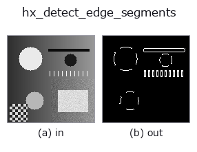

halcon_ext op• Data kinds: image → region
• Call: fullseye.apply(img, "hx_detect_edge_segments", a=0.5, b=0.5) (the 2-D model is one image plus two scalar knobs a,b∈[0,1])
• HALCON equivalent: detect_edge_segments (the HALCON reference is a useful guide to its meaning and parameters)

*The figure is the actual output on a synthetic 128×128 input. Left: input, right: output. Point clouds are drawn as a top-down scatter (brightness = z), 1-D series as a line plot, volumes as the maximum-intensity projection along z, videos as the middle frame, complex images as magnitude; return values that are not pictures are shown as the values themselves.*
Sweeping knob a (0.1 / 0.5 / 0.9, the other knob at its default):
▸ hx_detect_edge_segments: knob a sweep (docs site)
Sweeping knob b (0.1 / 0.5 / 0.9, the other knob at its default):
▸ hx_detect_edge_segments: knob b sweep (docs site)
On other images (synthetic scene / photo / coins. Top row: inputs, bottom row: their outputs. Knobs at default):
▸ hx_detect_edge_segments: other inputs (docs site)
*The 4th column is a colour (H,W,3) input. This op handles colour without crossing channels (it does not convolve the colour channel as a third spatial axis).*
Detect straight edge fragments: thin by NMS, then keep the connected components that PCA finds elongated (line-like).
> The detailed description below is the original text — the summary and the headings are translated.
`hx_nonmax_dir(v, a, 0) で細線化したエッジ(> 0`)を 8 近傍で連結成分に分け、各成分の画素座標の共分散
固有値比 `λmax/λmin が min_ratio` 以上のもの(細長い=直線状)だけを 1 とする 0/1 の float region を返す。
• `a → 細線化段の弱エッジしきい値(hx_nonmax_dir の a と同じ。正規化振幅 a*0.3` 未満を捨てる)。
• `b → 細長さのしきい値 min_ratio = 3 + b*12`(3〜15)。大きいほど真っ直ぐな断片だけ残る。
• 画素数 5 未満の成分は無条件に捨てる。`λmin` がほぼ 0(完全な直線)なら比を無限大として採用する。
注意: 直線性の判定は「点群の広がりが 1 軸に偏っているか」であり、曲線でも十分細長ければ通る。細線化段が斜め
エッジをほとんど細線化しない(`hx_nonmax_dir` の注記参照)ため、斜めのエッジは幅を持った塊になり固有値比が
下がって落とされやすい。連結成分単位なので、交差した線は 1 つの成分として比が下がる。後段で線分ごとに扱うなら
`hx_region_to_label や hough_line_trans`。
• gallery2d_halcon_ext family guide
• Sample-data catalog (download URLs / licences) — 2-D uses skimage.data (BSD/public domain) plus synthetic images; 3-D lists download URLs for real data sources (Stanford, PDS, …).
• Operator provenance and references — the sources of the research/methods this op family came from.
• The canonical algorithm (author, year) and its uses are named in the family usage guide above.
The program below has been verified to run (same input as the figure). In Studio's help this block becomes buttons that load and run it on the spot.
hx_detect_edge_segments 0.50 0.50
▸ Load this pipeline · Load & run
• gallery2d_halcon_ext — py -3.11 examples/gallery2d_halcon_ext.py
region as input)identity · reg_erode · reg_dilate · reg_open · reg_close · fill_holes · select_largest · remove_small
halcon_ext)hx_gen_circle · hx_gen_ellipse · hx_gen_rectangle2 · hx_gen_checker_region · hx_gen_grid_region · hx_gabor · hx_fit_surface1 · hx_fit_surface2
*Provenance: ops.py — 2D operator registry. This per-op note is generated by tools/opdocs.py md (do not hand-edit).*
© 2026 Kazufumi Furuse — Fullseye operator documentation. Licensed under Apache-2.0.
{kind=link}
{kind=link}
{kind=link}